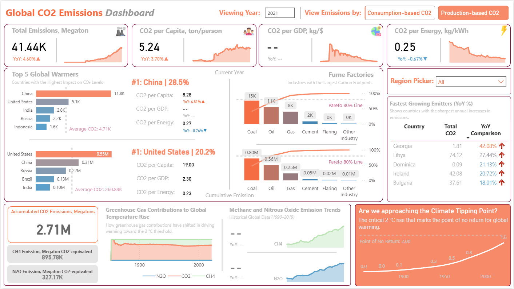

Interactive analysis of global CO₂ trends by country, fuel type,
and year to uncover environmental impact patterns.
Overview
This single-page Power BI dashboard delivers a comprehensive analysis of global CO2 and greenhouse gas emissions across countries, industries, and time — spanning over a century of climate data. Designed for researchers, policy analysts, and sustainability professionals, it transforms complex environmental datasets into clear, actionable intelligence on emission sources, country-level performance, and trajectory toward the critical 2°C climate tipping point. The dashboard bridges the gap between raw climate science and strategic decision-making.

Business Question
Climate policy makers, ESG analysts, and sustainability teams face a critical challenge: understanding not just how much CO2 is being emitted globally, but who is responsible, which industries are driving it, and how fast the situation is deteriorating. Without a unified analytical view, it is difficult to prioritize interventions, hold countries accountable, or assess whether the world is on track to avoid irreversible warming. This dashboard provides that visibility — turning fragmented global data into a clear emissions accountability framework.
Key Insights & Features
-

- Core KPIs Tracked
-
Year 2021: Total Emissions (41.44K Megatons, +4.60% YoY), CO2 per Capita (5.24 ton/person, +3.70% YoY), CO2 per Energy (0.25 kg/kWh, -0.67% YoY), Accumulated CO2 (2.71M Megatons), CH4 (895.78K MT), and N2O (327.17K MT) — all with year-over-year variance indicators.
- Country-Level Benchmarking
-
Top 5 Global Warmers ranked by absolute emissions (China at 28.5% of year 2021, U.S. at 20.2% of cumulative emission) alongside per capita, per GDP, and per energy intensity metrics — enabling fair cross-country comparison beyond raw volume.
- Industry Emission Breakdown (Fume Factories)
-
Pareto chart analysis of emission sources — Coal, Oil, Gas, Cement, Flaring, and Other Industry — with cumulative contribution curves identifying the 20% of sources driving 80% of emissions.
- Fastest Growing Emitters Table
-
Dynamic ranking of countries by sharpest YoY emission increases (Georgia +42.08%, Libya +27.44%), surfacing emerging climate risks that aggregate totals would otherwise mask.
- Climate Tipping Point Visualization
-
A dedicated panel tracks the global temperature trajectory against the 2°C point of no return, contextualized with historical GHG contribution trends from 1900 to present — making the urgency visceral and data-grounded.
- Interactivity & Filters
-
Year selector (viewing year input), toggle between Consumption-based and Production-based CO2 methodologies, and a Region Picker slicer — enabling multi-dimensional, user-driven exploration of the data.
| Tool | Usage |
|---|---|
| Power BI | Dashboard design, report pages, interactivity |
| DAX | KPI calculations, YoY/MoM comparisons, margin metrics |
| Power Query (M) | Data transformation and modeling |
| Excel | Source data preparation |
| Data Modeling | Star schema with fact and dimension tables |
Impact & Value
This dashboard equips sustainability analysts, ESG teams, and policy advisors with a single source of truth on global emissions — enabling faster, evidence-backed decisions on where to focus climate interventions and which countries or industries require the most urgent attention. The dual methodology toggle (consumption vs. production-based CO2) adds analytical depth rarely seen in public climate tools, making it relevant for trade policy and supply chain sustainability discussions. By visualizing the 2°C tipping point trajectory alongside current emission trends, the dashboard doesn't just report data — it communicates urgency, making it a powerful tool for advocacy, reporting, and strategic planning.
Check out the Dashboard here:
Let's Work Together!
I help businesses turn raw data into actionable insights, dashboards, and data-driven strategies.
- Data Analysis & Visualization
- Power BI & Dashboard Development
- Business Intelligence Solutions
Phone
+63 956-175-9646Address
Bacolod City, Negros OccidentalPhilippines